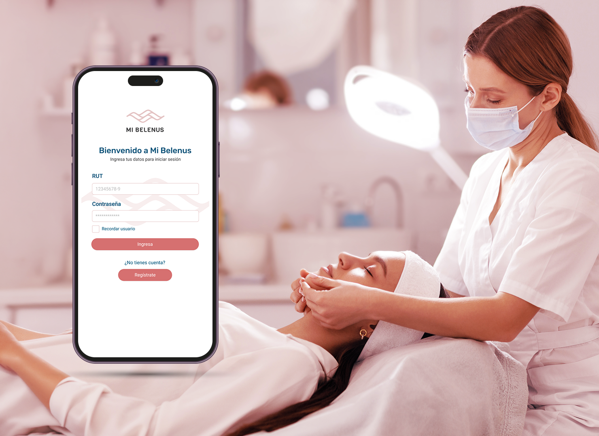
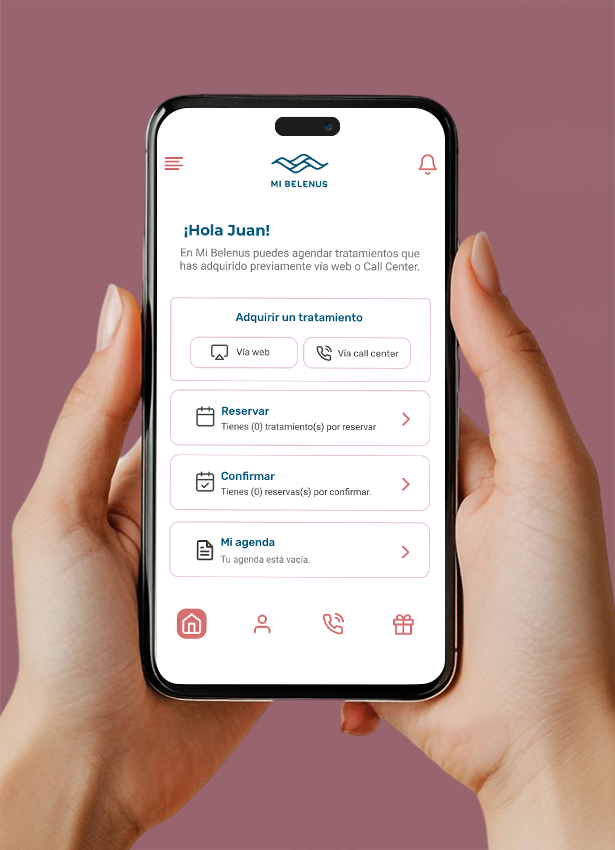
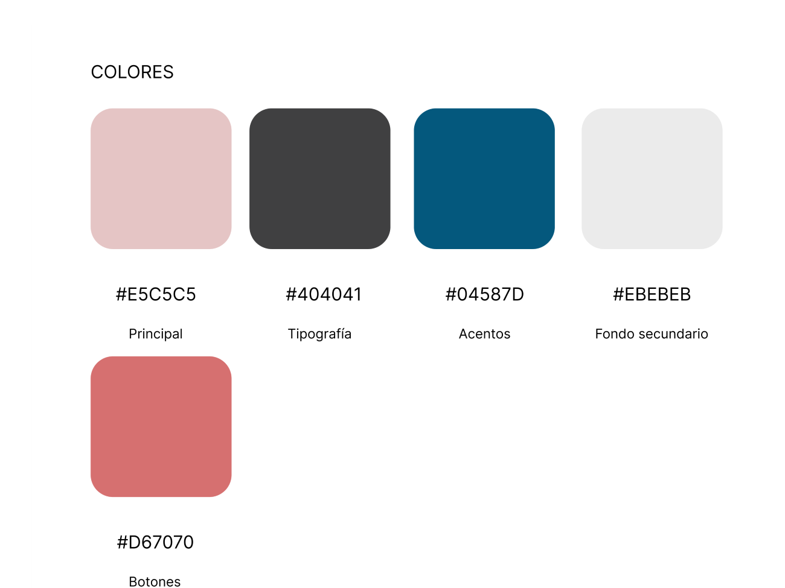
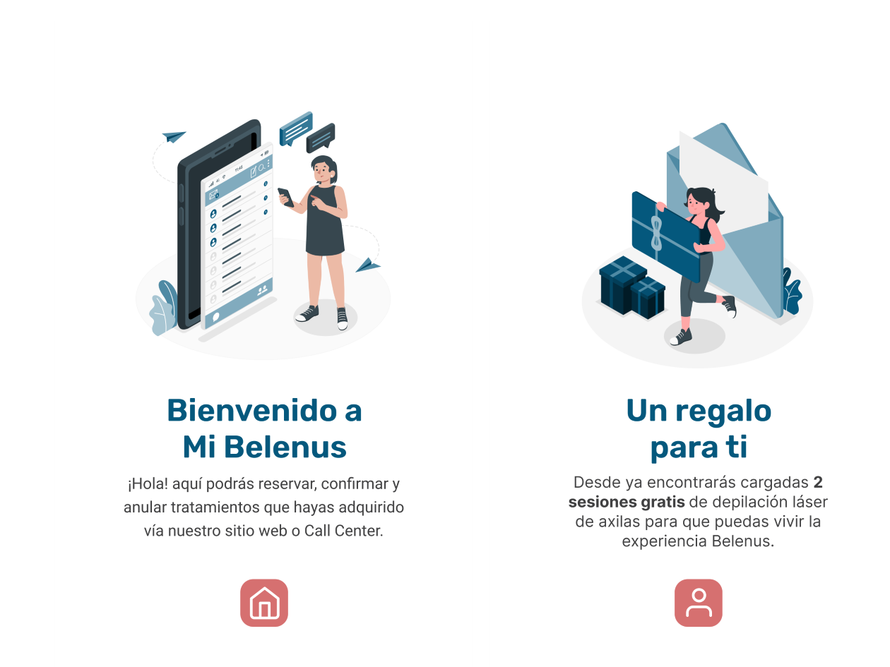
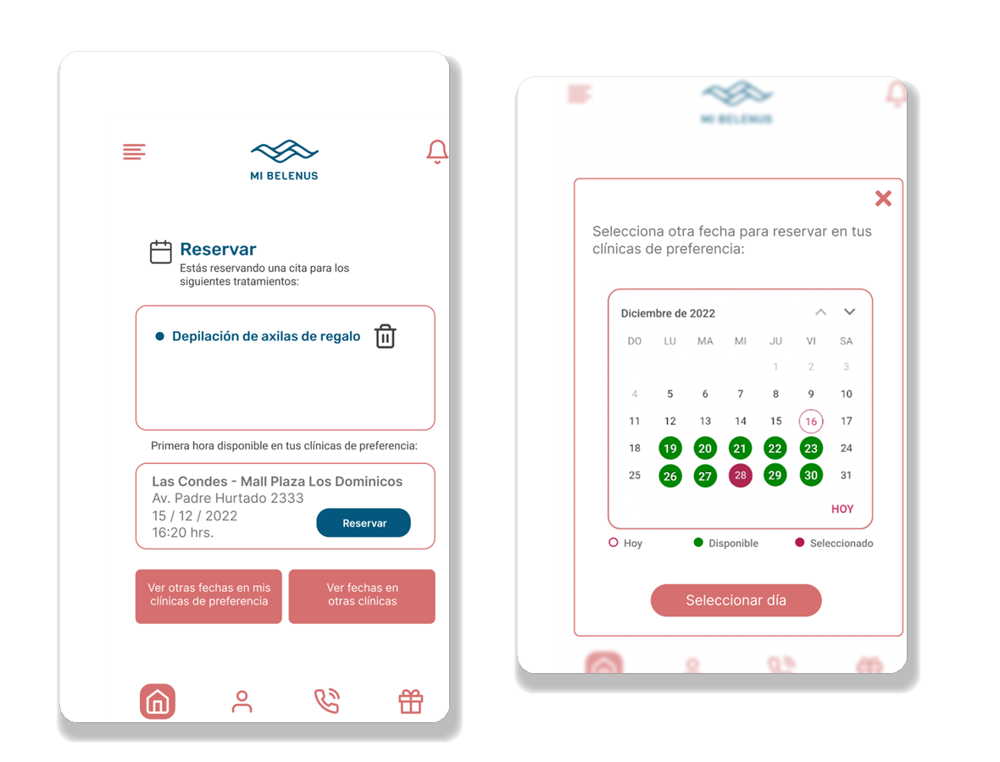

Belenus Clinic
Creating a mobile app that streamlined appointment booking and improved access to aesthetic treatments.
Mi Belenus was designed as a mobile application that centralizes appointment booking, treatment management and customer services into a single digital experience. The project focused on simplifying complex user journeys while creating a scalable foundation for future digital services.


Belenus Clinic offered laser and aesthetic treatments across multiple locations, but booking a session depended entirely on phone calls or WhatsApp messages handled by clinic staff.
Patients had no way to check real-time availability, confirm or cancel a session, track how many treatments they had left, or gift a session to someone else. Every request added manual work for the clinic team and uncertainty for the patient.
The challenge was to design a mobile application that gave patients full control over their treatments — booking, confirming, tracking and gifting sessions — without adding friction to the clinic's existing operations.
Before designing any screen, we needed to understand the full manual booking process — how appointments were requested, confirmed and tracked, and where patients and staff experienced the most friction.
Working closely with Belenus Clinic's team, we mapped the existing booking journey end-to-end and translated it into a detailed wireflow covering every state: onboarding, treatment selection, scheduling, confirmation, cancellation, session history and gifting.
This discovery phase became the backbone of the project — every screen in the final application was traced back to a specific step in that flow.
The research phase focused on translating an informal, person-dependent process into a structured digital flow that patients could follow on their own.
We found that patients didn't need every clinical detail up front — they needed clear next steps: which treatments were available, when, and how to confirm or change a booking without calling the clinic.
This reframed the project from digitizing a form into designing a guided, self-service booking journey.
Sessions with clinic staff and administrators surfaced the most common booking requests, cancellations and exceptions handled manually every day.
We mapped every step of the existing booking process, from first contact to session completion, to identify what could be self-served in-app.
We reviewed booking patterns from healthcare and wellness apps to identify familiar, trustworthy interaction models for scheduling and cancellations.
We catalogued edge cases — expired sessions, gifted treatments, multi-clinic preferences — that the flow needed to support from day one.
The real challenge wasn't building a booking form.
It was replacing a phone call with a flow patients could trust.
We translated the discovery findings into a complete wireflow covering every path through the application: authentication and registration, treatment booking, confirmation and cancellation, session history, gifting and account management.
Mapping the flow before designing any interface let the team validate edge cases early — like what happens when a session expires, or when a patient wants to gift a treatment to someone who isn't registered yet — without the cost of reworking finished screens.
This flow became the shared reference for design and development throughout the project, keeping every screen traceable back to a specific step in the patient journey.
With the flow validated, we defined a visual language built around clarity and trust — an important quality for a healthcare-adjacent product where patients are managing bookings and personal data.
Every screen surfaces one clear next action, keeping treatment and scheduling details progressive rather than upfront.
Booking, confirming and cancelling all follow the same visual and interaction pattern, so patients only need to learn it once.
A calm color palette, clear typography and predictable navigation reinforce confidence in a healthcare context.
Reusable components and a documented color and type system allow the product to grow with new treatments and services.

The palette pairs a soft rose primary with a deep navy accent, paired with Roboto and Rubik for a calm, trustworthy feel appropriate for a healthcare product.

A short, illustrated onboarding introduces the app's core value — free gifted sessions and always-on access to the clinic — before asking patients to register.

The booking flow surfaces treatment details and available time slots first, with a calendar view that makes availability immediately clear.
The visual system had to do two jobs at once: feel as calm and reassuring as the clinic itself, and stay simple enough to scale to every future treatment.
The final prototype connects every screen mapped in the wireflow into a working, testable experience — from onboarding to treatment confirmation.
Instead of a single feature, the project shipped as a full patient journey — ready for engineering handoff and built to support future treatments and services.
End-to-end appointment booking — from treatment selection to confirmation — fully mapped and designed for self-service.
Patients can view, add or remove treatments from a booking before confirming a session.
A dedicated history view shows completed, upcoming and cancelled sessions at a glance.
A built-in flow lets patients send a treatment session to someone else directly from the app.
A documented component library and flow architecture ready to support new treatments, clinics and services.
Instead of a single feature, the project delivered a complete, reusable foundation the clinic can keep building on.
Designing Mi Belenus from scratch — with no existing digital product to reference — reshaped how we approached flow, scope and trust.
Documenting the full flow before touching UI prevented costly rework later and kept every screen grounded in a real use case.
In a healthcare-adjacent product, reducing steps and surfacing clear next actions mattered more than showing every detail.
Treatments don't end at booking — planning for session history, expiration and gifting from the start avoided gaps later.
The biggest takeaway: a booking flow is only as good as the process it replaces — understanding that process was the real design work.